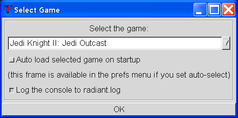
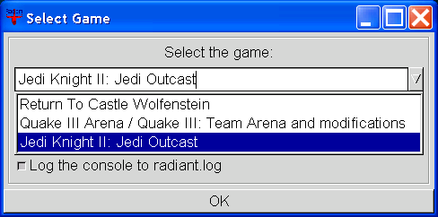
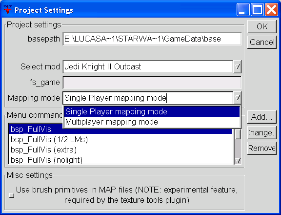
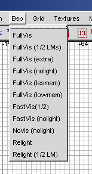
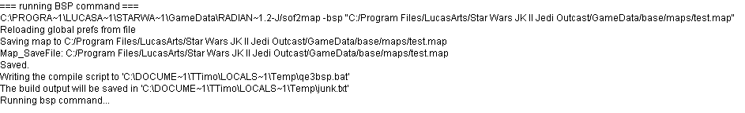

Table of Contents
- Multiple games support in GtkRadiant - Project settings for JK2 - Compiling and running your maps - Troubleshooting The purpose of this document is to highlight the parts of GtkRadiant which have changed in the new version 1.2. We also discuss the basics of level editing for Jedi Knight II: Jedi Outcast. This is not the GtkRadiant manual, or a mapping howto though (those topics are covered in other help documents, and on websites). Multiple games support in GtkRadiant GtkRadiant supports level editing for multiple games through a central installation and some game specific packages. In the case of Jedi Knight II: Jedi Outcast for instance, the editor installs in C:\Program Files\GtkRadiant and puts the game package in C:\Program Files\Lucasarts\Jedi Knight II Outcast\Radiant (these are default paths on win32, your mileage may vary). When you execute the editor from the Start Menu, it will look for installed game packages. If only one game pack is present, then it will start loading for this game directly, otherwise it will prompt you with the general preferences dialog, asking you which game you want to edit for.
  Game selection dialog The files describing which game packs are installed and where are in the C:\Program Files\GtkRadiant\games folder. They are created during setup to match your particular settings. Once you have selected Jedi Knight II: Jedi Outcast, the editor will continue loading using JK2 configuration. If it is the first run, it will create a default project configuration for you. You can view and edit your project configuration from the Files > Project settings... menu.
 Project settings dialog in JK2 mode The only thing you have to modify in the project settings is the mapping mode combo menu. Select the right configuration depending wether you are doing single player maps or multiplayer maps. Currently, the multiplayer/single player mapping mode toggle will only affect the entities file that gets loaded. Multiplayer uses base/scripts/mp_entities.def and Single Player uses base/scripts/sp_entities.def. A bit more of information about the project files: those are .qe4 files in C:\Program Files\Lucasarts\Jedi Knight II Outcast\GameData\base\scripts. There is a very particular file there, quakev2.qe4 which Radiant uses to generate your actual project. You should never modify this file unless you know what you are doing. The project files that Radiant uses for everyday run are the user*.qe4 files. Compiling and running your maps Any map (i.e. .map file) needs to be 'compiled' into a .bsp file in order to be loaded into the engine. This is done by sof2bsp, the compiling utility provided by Raven Software. Compilation of your level can only be done non-interactively as sof2bsp does not use the monitored mode. Note that one Single Player sample map and one Capture The Flag sample map (namely kejim_post.map and ctf_bespin.map) are provided in the setup. Those are a great source for learning.
 JK2 BSP commands You have a choice among several BSP commands, ranging from a full BSP/VIS/LIGHT (FullVis) to only a simple BSP stage (Novis (nolight)). Since JKII doesn't have monitored compiling, building the map and testing it in engine is not as simple. When you start a compile command, you are getting something similar to the following in the console:
 JK2 BSP console Once the DOS compile box has closed, you need to make sure the compile went well by checking the junk.txt file. Look at your console (see above) for the location of this file. If the compile was successful, you can now load your map in the engine:
If the editor doesn't work correctly, make sure that your installation is not broken, i.e. you have installed newer version above an older one, or you are trying to use and editor binary with incompatible modules and tools (i.e. that came from other sources). Carefully examine the console of the editor for any error and warning messages. Some important things are happening while the editor is starting, before the console is available, this is why it is possible to have Radiant log everything to a radiant.log file (which will be in C:\Program Files\GtkRadiant\radiant.log). You can turn logging on from the preferences menu. If that fails, see the links page that comes with GtkRadiant setup to find forums and help. In the editor, the Help menu provides a number of useful shortcuts.
|
{kind=link}